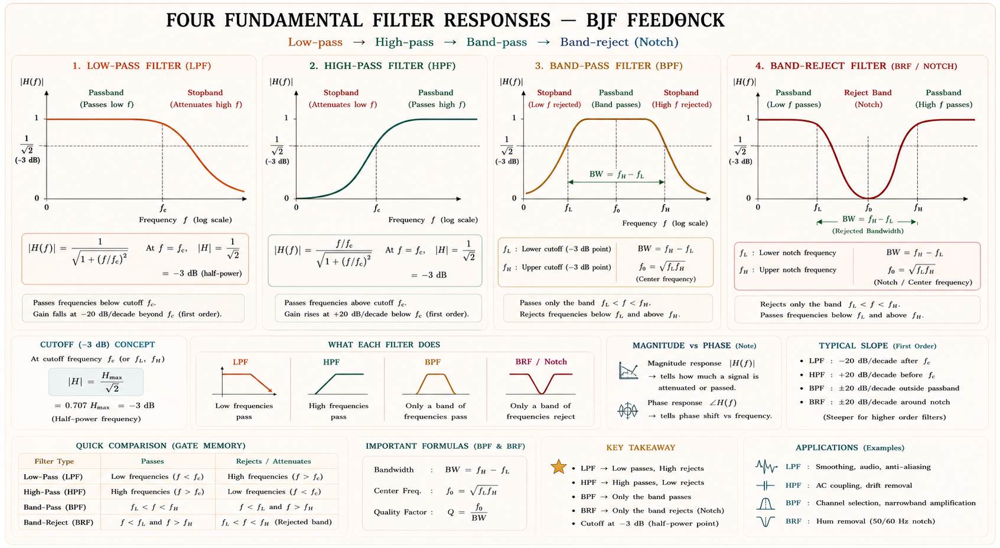
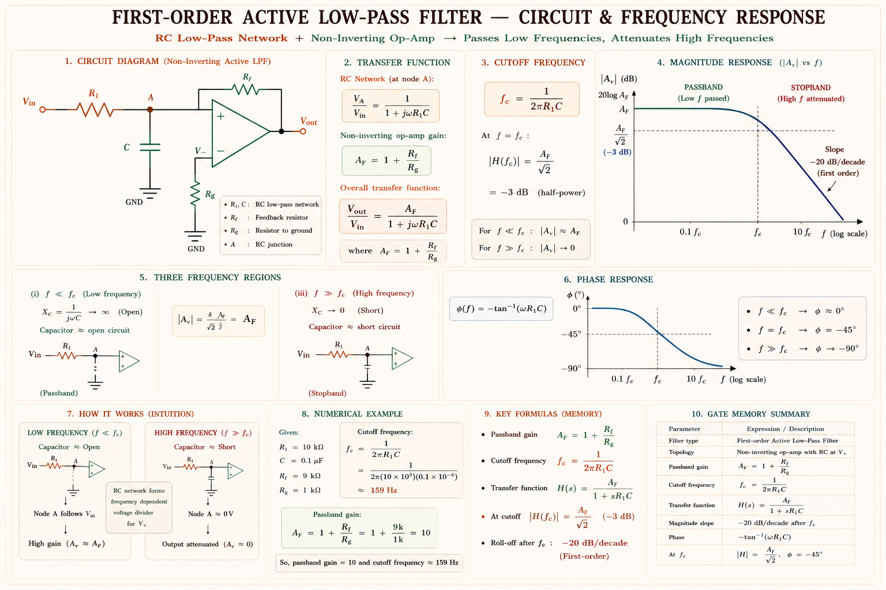
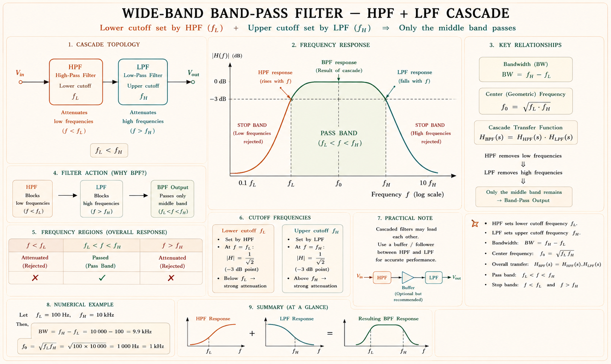
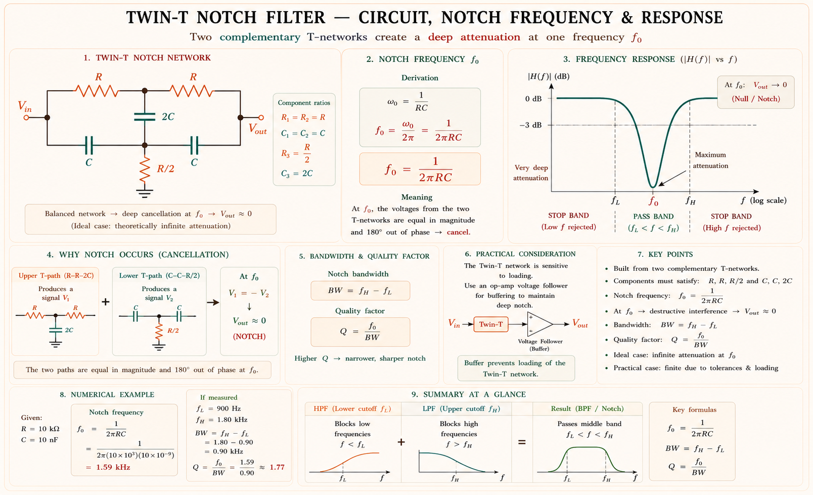
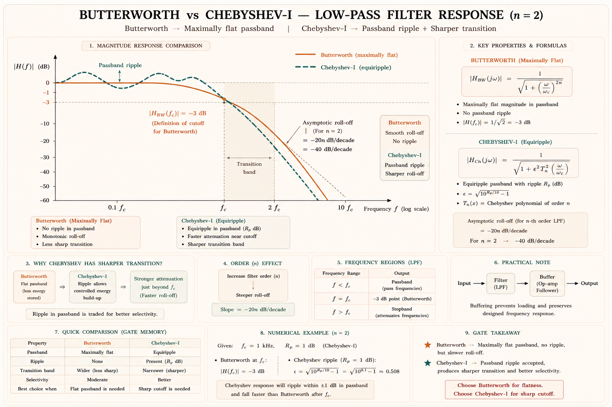
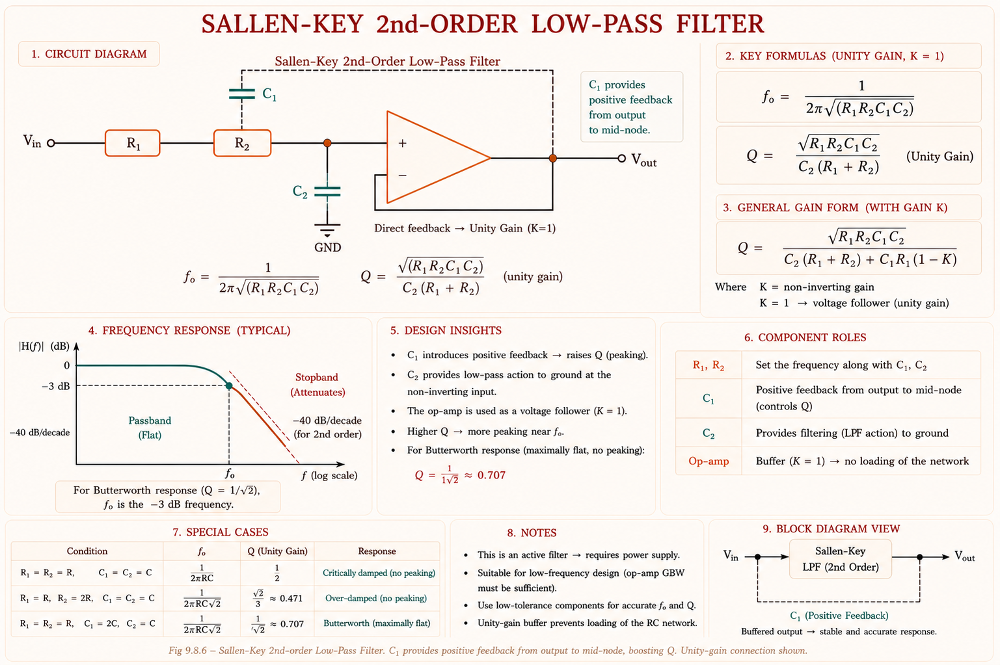
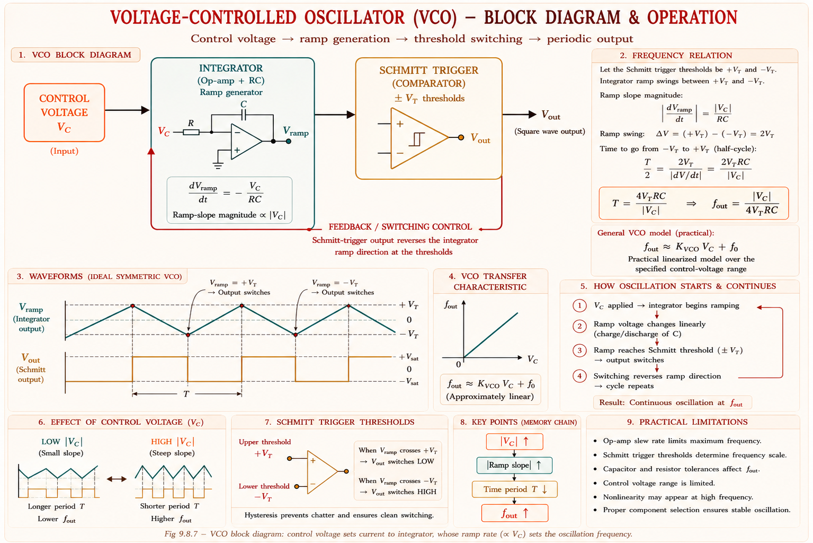
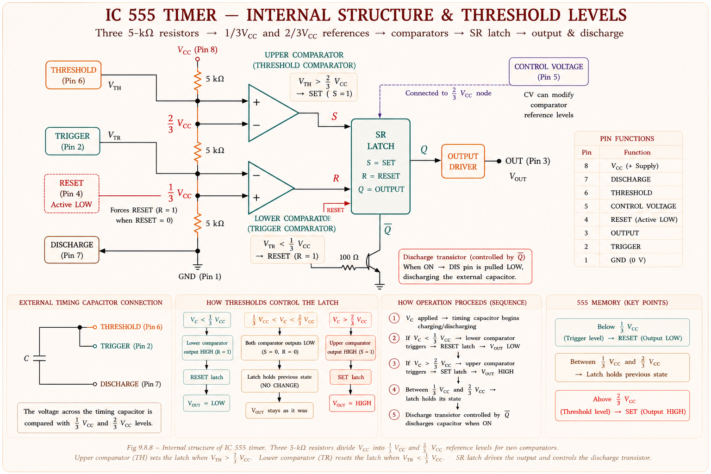
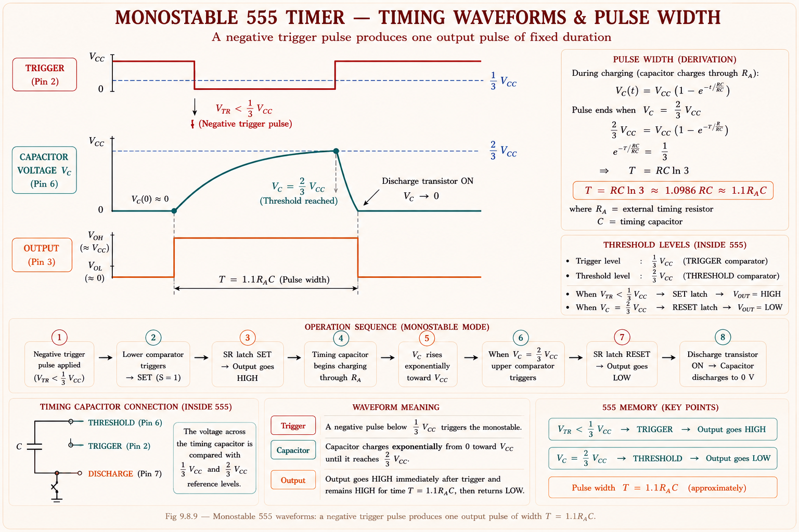
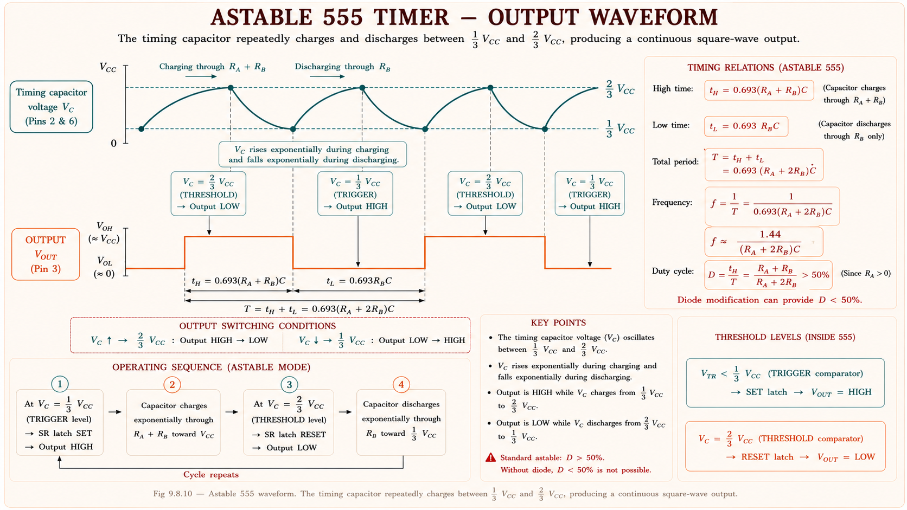

Op-amp based active filters (LPF, HPF, BPF, BRF), Butterworth & Chebyshev responses, Sallen-Key topology, voltage-controlled oscillators, and the ubiquitous IC 555 timer — complete conceptual treatment with derivations, diagrams, and GATE/IES PYQ analysis.
Every real-world electrical signal is a mixture of wanted components and unwanted noise, interference, or harmonics. A filter is a frequency-selective network that passes certain frequencies and attenuates others. The classical approach uses passive RLC networks — but these suffer from bulky inductors, loading effects, and signal attenuation within the passband. Active filters, built around op-amps with resistors and capacitors (no inductors!), solve all three problems at once.[1]
At audio frequencies (20 Hz – 20 kHz), an inductor for a 1 kHz filter would need to be hundreds of millihenries — physically large, lossy, and sensitive to stray magnetic fields. An active RC filter using an op-amp achieves the same response with a few kΩ resistors and nF capacitors on a tiny PCB.
| Parameter | Passive (RLC) | Active (Op-amp RC) |
|---|---|---|
| Inductors required | Yes — bulky, lossy | No — only R and C |
| Passband gain | Always ≤ 1 (loss) | Can be > 1 (amplification) |
| Loading effect | Severe — stages interact | Negligible — high Z_in, low Z_out |
| Tunability | Difficult | Easy — change R or C |
| Frequency range | Up to GHz (LC resonance) | Up to ~MHz (GBW limited) |
| Power supply needed | No | Yes (for op-amp) |

LPF: Anti-aliasing before ADC in digital audio. HPF: Removing DC offset in amplifier stages. BPF: Radio receiver front-end selecting a channel. BRF (Notch): Eliminating 50 Hz power-line hum from ECG machines.
The first-order active LPF is the simplest building block. It is formed by placing a passive RC low-pass network at the non-inverting input of an op-amp configured as a non-inverting amplifier. The op-amp provides gain in the passband and buffers the output from the load.[1]

Applying voltage divider at node A and the non-inverting gain formula of the op-amp:[1]
| Frequency Range | Magnitude | Behaviour |
|---|---|---|
| \( f \ll f_H \) (passband) | \( |H| \approx A_F \) | Signal passes with full gain |
| \( f = f_H \) (−3 dB point) | \( |H| = \frac{A_F}{\sqrt{2}} \) | Power halved, voltage at 70.7% of passband |
| \( f \gg f_H \) (stopband) | \( |H| \) rolls off at −20 dB/decade | Signal attenuated proportional to 1/f |
In a first-order active LPF the roll-off rate is −20 dB/decade (−6 dB/octave). Each additional order adds another −20 dB/decade. A second-order filter attenuates at −40 dB/decade. Students confuse "order" with "decades of roll-off" — remember: order × 20 dB/decade.
Solution: At \( f = 6 \text{ kHz} \), ratio \( \frac{f}{f_H} = \frac{6000}{2000} = 3 \). Magnitude \( = \frac{A_F}{\sqrt{1 + 9}} = \frac{4}{\sqrt{10}} \approx \mathbf{1.265} \) (or −10 dB relative to passband).
The active HPF is obtained by interchanging R and C in the passive network of the LPF. Now the capacitor is in series with the signal path and the resistor is to ground. At low frequencies, C has high impedance and blocks the signal; at high frequencies C is almost a short, allowing the signal to pass.[2]
Swap R and C to convert LPF ↔ HPF. Swap f_H and f_L. The gain formula \( A_F = 1 + \frac{R_F}{R_1} \) does not change. The roll-off direction flips: LPF goes down at high f; HPF goes up (then flattens) reaching high f.
The simplest BPF topology cascades an LPF and an HPF such that f_L (HPF cut-off) < f_H (LPF cut-off). The passband lies between these two frequencies. Both stages use op-amps, so there is no loading between them.[2]

When Q > 10, the cascade approach is impractical. The Multiple Feedback (MFB) active BPF uses a single op-amp with two capacitors and three resistors to achieve a narrow passband. The inverting input is used, providing a phase inversion of 180° at resonance.[2]
A BRF (notch filter) passes all frequencies except those in a narrow rejection band centred at f₀. The most common implementation uses a twin-T network — a passive RC network with infinite attenuation at one frequency — combined with an op-amp voltage follower for buffering.[3]

In biomedical instruments (ECG, EEG), power-line interference at 50 Hz (India) or 60 Hz (USA) corrupts the signal. A twin-T notch filter centred at 50 Hz suppresses this hum. Choose R = 3.18 kΩ and C = 1 µF → f₀ = 1/(2π × 3180 × 10⁻⁶) ≈ 50 Hz.
Solution:
f₀ = √(200 × 5000) = √(10⁶) = 1000 Hz
BW = 5000 − 200 = 4800 Hz
\( Q = \frac{f_o}{BW} \) = 1000/4800 ≈ 0.208 (wide-band, Q < 1)
When a steeper roll-off than −20 dB/decade is needed, second-order (biquad) filters are used. They achieve \( -40 \text{ dB/decade} \) in the stopband with a single op-amp stage. The choice of approximation — Butterworth or Chebyshev — determines the trade-off between passband flatness and transition-band sharpness.[1]
The Butterworth approximation maximises flatness in the passband at the cost of a gradual roll-off. Its magnitude response has no ripple in either passband or stopband. For an n-th order Butterworth filter:[1]
| Order n | Roll-off (dB/decade) | Q factor (2nd order) | Damping ζ |
|---|---|---|---|
| 1 | −20 | — | — |
| 2 | −40 | 0.7071 (1/√2) | 0.7071 |
| 3 | −60 | 1.0 | 0.5 |
| 4 | −80 | 0.5412 & 1.3066 | Multiple stages |
For a second-order Butterworth LPF, \( Q = \frac{1}{\sqrt{2}} \approx 0.7071 \) and the damping coefficient ζ = 0.7071. This is the critically damped without overshoot condition for a 2nd-order system. When Q = 1/√2, the Sallen-Key filter is Butterworth.
The Chebyshev approximation allows a controlled ripple in the passband in exchange for a much sharper roll-off at the band edge compared to Butterworth of the same order. For the same order, Chebyshev has a steeper transition, making it useful when stopband attenuation is critical.[1]

| Property | Butterworth | Chebyshev |
|---|---|---|
| Passband flatness | Maximally flat (0 ripple) | Has ripple (ε dB) |
| Roll-off steepness | Gradual | Sharper for same order |
| Phase response | More linear | Less linear (more phase distortion) |
| Component sensitivity | Lower | Higher |
| Application | Audio, general-purpose | RF front-ends, data communications |
The Sallen-Key topology, proposed by R. P. Sallen and E. L. Key in 1955, is the most widely used active filter circuit for realising second-order responses. It uses a single op-amp in unity-gain (voltage follower) or finite-gain configuration. Two R's and two C's determine the pole frequency; the gain sets Q.[3]

For the equal-component Sallen-Key design (\( R_1 = R_2 = R \), \( C_1 = C_2 = C \), unity gain \( K = 1 \)):[3]
For Butterworth response, we need \( Q = \frac{1}{\sqrt{2}} \). With \( R_1 = R_2 = R \), set \( \frac{C_1}{C_2} = 2 \) (i.e., \( C_1 = 2C_2 \)). This gives \( Q = \frac{1}{\sqrt{2}} \) and \( \omega_0 = \frac{1}{RC_2\sqrt{2}} \). Alternatively, use non-unity gain \( K = 3 - \frac{1}{Q} = 3 - \sqrt{2} \approx 1.586 \) with equal R and C.
Step 1: For Butterworth, Q = 1/√2. Use non-inverting gain approach with equal R and C.
With R₁ = R₂ = R = 10 kΩ and C₁ = C₂ = C:
Step 2: For \( Q = \frac{1}{\sqrt{2}} \), the gain must be \( K = 3 - \frac{1}{Q} = 3 - \sqrt{2} \approx \mathbf{1.586} \).
Step 3: Set gain with feedback resistors: \( K = 1 + \frac{R_F}{R_G} = 1.586 \rightarrow \frac{R_F}{R_G} = 0.586 \). Choose \( R_G = 10 \text{ k}\Omega \rightarrow R_F = 5.86 \text{ k}\Omega \) (use 5.6 kΩ standard).
Answer: \( C_1 = C_2 \approx 15.9 \text{ nF} \), \( K = 1.586 \), \( R_F = 5.86 \text{ k}\Omega \).
The Sallen-Key HPF is derived from the LPF by interchanging the roles of R and C. Now capacitors are in the signal path (series elements) and resistors are to ground (shunt elements). The positive feedback capacitor (previously C₁) is now replaced by R₁ feeding from output back to the mid-node.[3]
For equal-component Sallen-Key filters (R₁=R₂=R, C₁=C₂=C), the Butterworth gain K = 3 − √2 ≈ 1.586 is the same for both LPF and HPF. Only the circuit topology changes (R↔C swap). This is a powerful design shortcut for GATE numericals — memorise K_Butterworth = 1.586.
A Voltage-Controlled Oscillator (VCO) is a circuit whose output frequency is a function of a control voltage V_c. It is the core element of Phase-Locked Loops (PLLs), frequency synthesisers, FM modulators, and function generators. As V_c increases, the output frequency f_out changes proportionally.[4]

Depending on the topology, a VCO can produce triangular, sawtooth, or square waves. A relaxation oscillator VCO (integrator + Schmitt trigger) naturally produces triangular and square waves simultaneously at the same frequency. An LC VCO produces a sinusoid.[4]
| VCO Type | Output Waveform | Application | Frequency Range |
|---|---|---|---|
| RC Relaxation | Triangle + Square | Function generators, PLL | Few Hz to MHz |
| LC Tank | Sinusoidal | RF oscillators, FM radio | MHz to GHz |
| Ring Oscillator | Square / approx. sine | CMOS ICs, PLLs on-chip | MHz to GHz |
| Crystal Controlled | Very pure sine | Clock generation, GPS | kHz to hundreds of MHz |
In a PLL, the VCO's output is compared to a reference signal by a phase detector. The error voltage adjusts V_c to lock the VCO frequency to the reference. PLLs are used in FM demodulation, frequency synthesis (mobile phones), clock recovery in communication systems, and motor speed control.
The NE/SE 555 timer IC, introduced by Signetics in 1972 (designed by Hans Camenzind), remains one of the most widely used ICs in history. It can operate as a monostable multivibrator (one-shot timer), an astable multivibrator (free-running oscillator), or a bistable multivibrator (SR flip-flop). Its internal structure is deceptively simple yet incredibly versatile.[5]

| Pin | Name | Function |
|---|---|---|
| 1 | GND | Ground reference |
| 2 | TRIGGER (TR) | Active LOW input. When V < ⅓V_CC → output goes HIGH, capacitor begins charging |
| 3 | OUTPUT | Output voltage — swings between ~0 V and ~V_CC (can source/sink 200 mA) |
| 4 | RESET (RST) | Active LOW override — forces output LOW regardless of TR/TH. Tie to V_CC if unused. |
| 5 | CONTROL VOLTAGE (CV) | Modifies comparator thresholds. Decouple to GND via 0.01 µF if unused. |
| 6 | THRESHOLD (TH) | When V > ⅔V_CC → output goes LOW, capacitor starts discharging via DIS |
| 7 | DISCHARGE (DIS) | Open-collector transistor that discharges timing capacitor to GND when output is LOW |
| 8 | V_CC | Supply voltage: 5 V to 15 V (single supply). Typically 5 V (CMOS) or 12 V. |
In monostable mode, the 555 produces a single output pulse of controlled duration \(T\) in response to a trigger. External components: resistor R_A between V_CC and Pin 7, capacitor C between Pin 6/7 and GND.[5]
The capacitor charges from 0 to \( \frac{2}{3}V_{CC} \) through \( R_A \). Using the universal RC charging equation \( V_C(t) = V_{CC}(1 - e^{-t/RC}) \), setting \( V_C = \frac{2}{3}V_{CC} \): \( \frac{2}{3} = 1 - e^{-T/RC} \rightarrow e^{-T/RC} = \frac{1}{3} \rightarrow T = RC\cdot\ln(3) = RC \times 1.0986 \approx \mathbf{1.1RC} \).

In astable mode, the 555 oscillates continuously between HIGH and LOW without any external trigger. Two resistors R_A and R_B, and capacitor C are required. The capacitor charges through R_A + R_B and discharges through R_B only, causing asymmetric duty cycle.[5]
Since the capacitor charges through R_A + R_B and discharges through R_B alone, t_HIGH > t_LOW always. This means Duty Cycle D is always > 50% for a standard astable 555. To achieve D < 50%, add a diode in parallel with R_B (diode + R_A method). This is a very common GATE question!

(a) Frequency:
(b) Duty Cycle:
(c) Timing:
Total period T = 0.624 + 0.416 = 1.04 ms → f = 1/T ≈ 962 Hz ✓
Answer: Connect a diode in parallel with R_B (cathode toward Pin 7). During charging, current bypasses R_B through the diode, so t_HIGH = 0.693 R_A C and t_LOW = 0.693 R_B C. Set R_A = R_B → D = 50%.
Three equal 5 kΩ resistors divide V_CC into thirds: ⅓, ⅔. Upper comparator activates at ⅔V_CC (threshold); lower at ⅓V_CC (trigger).
| Topic | GATE Probability | IES Probability | Typical Question Type |
|---|---|---|---|
| First-order LPF/HPF gain & f_c | 🟢 HIGH | 🟢 HIGH | Numerical — find gain or cut-off |
| Butterworth vs Chebyshev | 🟢 HIGH | 🟢 HIGH | MCQ — properties and distinction |
| Sallen-Key topology & Q | 🟢 HIGH | 🟡 MEDIUM | Numerical — find f₀ and Q |
| 555 astable — f, D, t_H, t_L | 🟢 HIGH | 🟢 HIGH | Numerical — compute all parameters |
| 555 monostable — pulse width T | 🟢 HIGH | 🟢 HIGH | Numerical — T = 1.1 RC |
| Twin-T notch filter | 🟡 MEDIUM | 🟢 HIGH | MCQ — identify topology, f₀ formula |
| VCO characteristics | 🟡 MEDIUM | 🟡 MEDIUM | MCQ — principle, PLL context |
| BPF from cascade LPF+HPF | 🟡 MEDIUM | 🟢 HIGH | Numerical — Q, BW, f₀ |
Anti-aliasing LPF: Before every ADC in signal processing — band-limits input to prevent aliasing. The Sallen-Key Butterworth is the standard choice for audio ADC interfaces. 555 Timer: Despite being 50+ years old, the 555 is used in LED flashers, motor speed controllers, missing-pulse detectors, PWM generation, and touch-sensitive switches. PSU interviews frequently ask to "design a 1 kHz square wave generator using 555" — know the astable calculation cold. Notch filter: Found in every medical-grade ECG machine to reject 50/60 Hz interference.
Ask any question about Active Filters and Waveform Generators — numerical problems, concepts, or GATE tricks.
Active filters use op-amp + R + C. No inductors. Passband gain ≥ 1. No loading. Roll-off = order × 20 dB/decade. Limited to MHz by GBW product.
f_c = 1/(2πRC). Gain = 1 + R_F/R₁. At f_c: |H| = A_F/√2 (−3 dB). LPF roll-off −20 dB/dec above f_H. Swap R↔C to convert LPF→HPF.
Butterworth = maximally flat, Q = 1/√2 (2nd order). Chebyshev = equal ripple in passband, sharper rolloff. For same order: Chebyshev steeper but more phase distortion.
2nd-order, one op-amp. f₀ = 1/(2π√R₁R₂C₁C₂). For Butterworth: K = 1.586, Q = 1/√2. Equal-R, equal-C unity-gain → Q = 0.5 (overdamped, not Butterworth).
\( T = 1.1 R_A C \). Single pulse triggered by negative edge on Pin 2. Pin 4 (RESET) = active LOW. Capacitor charges to ⅔V_CC through R_A.
\( f = \frac{1.44}{(R_A + 2R_B)C} \). D = (R_A + R_B)/(R_A + 2R_B) > 50% always. Diode across R_B for D ≤ 50%. Capacitor swings between ⅓V_CC and ⅔V_CC.
Oscillators and Signal Sources — Wien Bridge oscillator, RC phase-shift oscillator, Colpitts & Hartley LC oscillators, crystal oscillators, Barkhausen criterion for oscillation, and signal distortion analysis.
All technical content is derived from the following standard textbooks. All explanations, derivations, diagrams and examples are original to Aarova AI — paraphrased and restructured for exam-oriented learning.